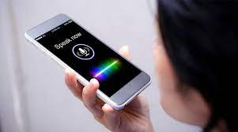

NOTICIAS
1.- Asistentes digitales con voz, la nueva compañía:
La sensación de querer estar acompañados se verá como una consecuencia
de los lapsos de tiempo que muchas personas tuvieron que pasar solos
desde sus casas por el confinamiento, y traerá consigo la tendencia de
los asistentes digitales. Aparecerán en todas partes.
El 2021 buscará la creación de nuevas formas de combinar e interactuar
servicios y equipos de software en el marco de enfoques modernos para organizar
procesos como por ejemplo, servicios bancarios utilizando exclusivamente la voz.
 2.- marketing digital:
Hoy en dia el marketing digital es uno de los principales trabajos
ya que se lo puede realizar desde el hogar solo ofertando los productos que se desea vender
y para ello se usa las redes sociales como lo son: facebook, twiter, instagram, whatsapp.ect.
3.-celular gaming:
hoy en dia un celular potente es necesario para poder cumplir con todos los requrimientos
para eso se a fabricado un celular inteligente especializado para los video juegos de consola con una
capacidad de 128 GB de almacenamiento y hasta 32 gigas de ram y un procesador snap dragon
con una bateria 150 mili amperios para que dure mas que una bateria de un celular normal .